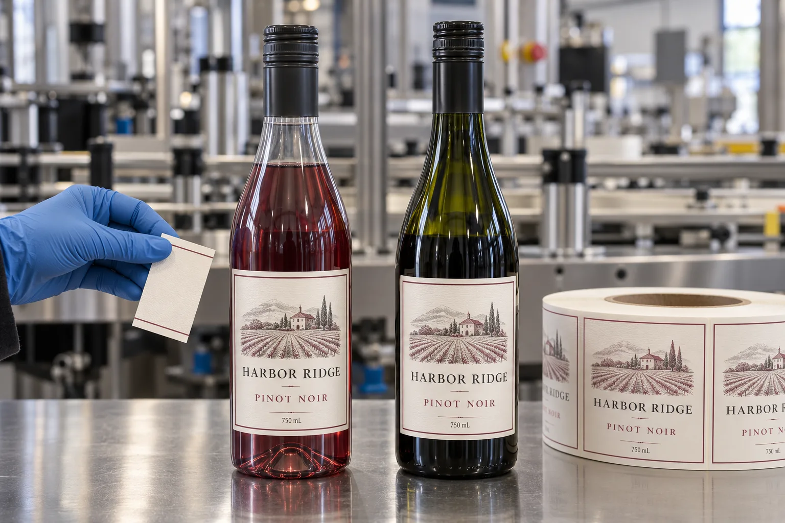

A new bottle can change the adhesive decision
When a buyer moves a wine SKU into PET, I would keep the brand artwork on the table but reopen the label specification. The bottle surface, stiffness and handling path have changed even if the front panel looks similar. A clear PET bottle also lets the wine color alter the apparent label contrast.
Avery Dennison's PET wine bottle technical overview describes different surface behavior from coated glass and warns that condensation affects initial adhesion. Its observations concern the tested constructions, not every label available today. I would use the bulletin to frame a trial, not to promise a pass.
Two sensible routes for one wine line
Imagine a composite brand filling its standard range in dark glass and a limited event run in clear PET. If the artwork is unchanged, the practical first comparison is a finished label on each filled bottle, photographed under the same shelf light. The PET version may need a different white backing or slightly different position to retain the intended contrast. That is an artwork decision, not proof that the adhesive is wrong.
A second composite bottler wants one stock for both formats to simplify inventory. That can be worth testing, but only if the chosen construction survives the actual line and distribution path on both bottles. I would not pay for two inventories automatically; equally, I would not save one material code by accepting failures on the smaller PET run.
Test application and removal as separate questions
Record whether bottles are dry when labeled, how cold they are, and whether they later sit in an ice bucket. Press a production-printed sample on each real bottle and inspect edge lift after normal handling. If the brand expects labels to wash off for a returnable system or a recycling process, state that requirement separately. A label that stays on beautifully in wet service is not automatically easy to remove.
| Decision | Glass trial | PET trial |
|---|---|---|
| Panel and contrast | Check coating, bottle color and front/back placement | Check clear wall, wine color and any white underprint |
| Application | Note bottle dryness and line pressure | Note bottle dryness and deformation under pressure |
| Wet handling | Inspect paper appearance and edges | Inspect appearance and edges independently |
| End of life | Confirm the intended glass process | Confirm the intended PET process |
Our buying view
Approve the pair, not a loose label
If I had to choose where to spend the first proof budget, I would put printed labels on filled bottles from both suppliers. A paper swatch in a folder cannot show whether the label looks right through PET or whether the bottling line presses it down consistently.
Send a useful changeover brief
- Both bottle formats with closures and actual fill color.
- Current label construction and printed artwork files.
- Application speed, temperature and surface moisture.
- Cold service, transport and removal requirements.
- Photographs of any edge or appearance failure.
For wet-service selection, read wine label materials for an ice bucket. If bottle geometry changes too, see how to find a usable glass panel.
Frequently asked questions
Can I use the same artwork on PET and glass wine bottles?
Often yes, after checking the usable panel and print contrast. Do not assume the same label material and adhesive are already qualified.
Is PET always easier to label than glass?
No. The exact bottle surface, moisture at application, label face and handling sequence still need a finished-package trial.
What samples should I send?
Send filled PET and glass bottles, current printed labels, application temperature, wet-use conditions and the intended removal or recycling requirement.
Related buyer guides
Review your label specification
Send package photos, label dimensions, material details, quantity and application conditions. Include good and failed samples where possible so the discussion starts with evidence.